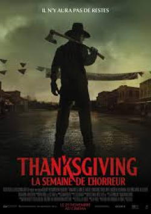

Un an après qu’un Black Friday a viré au chaos, un mystérieux tueur s’inspire de la fête traditionnelle de Thanksgiving et terrorise la ville de Plymouth (Massachussetts), berceau de la célèbre fête. Alors que les habitants sont éliminés les uns après les autres, ces meurtres qui semblaient aléatoires, révèlent un plan plus vaste et sinistre. Les habitants découvriront-ils le tueur et survivront-ils à la fête... ou deviendront-ils les invités de son dîner de Thanksgiving complètement tordu ?
Pour plus de détails, cliquez ici